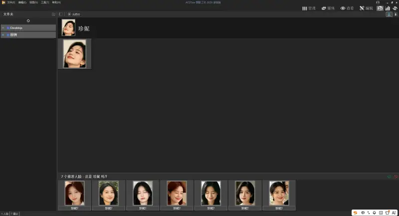
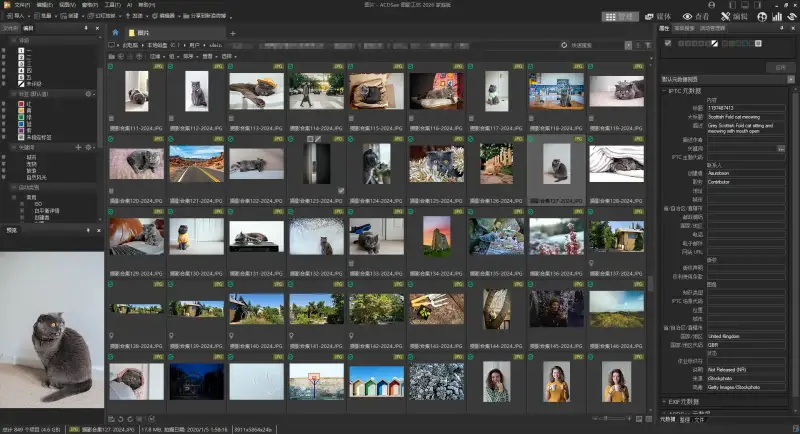
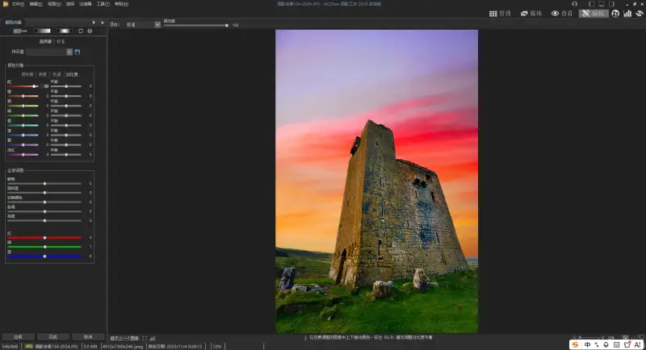
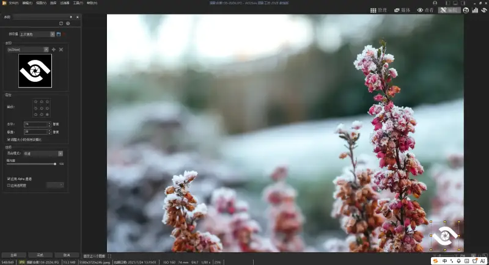

If you love taking photos and collecting image assets, you have likely had this headache. You copy photos from your phone again and again. On the hard drive, travel snaps, family moments, and screenshot assets pile up layer after layer. You clearly remember saving an image, but when you actually need it, you scroll through dense thumbnails for ages. To color a few photos or add a watermark, you must launch a heavy editing app, and by the time it loads, the mood is gone.
If you just want to organize your daily images well and do not need complex professional features, ACDSee 2026 Family is a handy choice. It has no steep learning curve. It makes image organizing and basic editing simple and smooth, which suits ordinary users managing their own photos and asset library.

Automatic face sorting puts your daily photos in their place
The hardest part of managing family photos is separating pictures of different people. You used to sort them one by one by hand, which strained the eyes and took time.
The AI face recognition in ACDSee Family solves exactly this pain point. After you import a whole photo folder, the app scans and groups all the faces automatically. You only label your family members once, and afterward it recognizes and sorts them on its own. Your child growth photos, your parents travel photos, and group shots with friends each go into the right person group. Next time you want all photos of one person, just search the name and pull them up in one step, with no more searching for a needle in dozens of folders.

The image assets you collect every day are also easy to manage. You can tag them simply, such as landscape, travel, or city, and mark your frequent picks with star ratings. Over time you build your own private asset library. For tedious tasks such as batch renaming, batch format conversion, and batch resizing, one click does the job, with no repeated work on each image. It also finds duplicate photos automatically and helps you clear redundant files from the drive, quietly saving plenty of space.

A thoughtful point is that it does not import photos into its own database. It reads the existing folders on your drive directly. Plug in an external drive and you can start organizing right away, with no file migration. This is very friendly to ordinary users.
Do everyday edits on the spot, no big app required
Most of the time our edits do not need complex layers and masks. We just adjust brightness and contrast, crop to a good size, remove red eye, or add a watermark and a filter. You can do all of these right in ACDSee, with no need to launch a large editing app.
The basic tools for color, crop, and rotate are all there. Drag a slider and preview the effect in real time, so even beginners can use it. The dehaze tool new in the 2026 edition is handy. For gloomy landscape shots taken on overcast days or outdoor snaps in fog, one click brings back clarity and depth, with no tedious back-and-forth adjusting of parameters.
If you want to add a retro grain, a moody filter, or a simple border, ready-made tools are available. For everyday edits such as posting on social media, making journal pages, or organizing life records, it covers the basics and saves a lot of time waiting for an app to load.

Lightweight and handy, a photo manager enough for home use
The biggest feeling after using it is its sense of restraint. It does not pile on professional features that ordinary users will not use. All the common browsing, organizing, and editing tools are out in the open, ready to use, with no need to study a manual. The upgraded activity manager runs batch tasks in the background. You can let it convert formats and sort photos in the background while you keep browsing other images, with no stalled progress.
Compared with the heavy professional edition, the Family edition is more of a daily photo manager for ordinary people. It sorts your piled-up photos and assets clearly, handles basic edits on the spot, and costs far less. For people who just want to manage their own image library well, the features are just right, neither wasted nor lacking.

Each photo and asset we save is really a fragment of life and a snapshot of inspiration. A handy tool to settle them in place means that next time you want to revisit or use them, you can find them at once, which adds a small sense of calm to daily life. Right now the ACDSee website is running a promotion. From now until September 21, 2026, enter the code HOME0917 and the ACDSee 2026 Family edition (lifetime license) gets an extra discount, which makes it a great deal. Whether you are a casual selfie fan, a part-time content creator, or a beginner in photography, buying at this point is a good value.